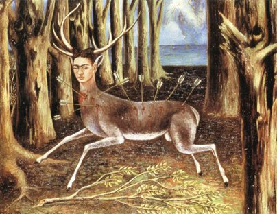

The Wounded Deer
Frida Kahlo · 1946 · Oil on masonite · 22.4 × 30 cm · Private collection
In copyright. Look and learn: shown for study, not for download.
The painting is small, 22.4 by 30 centimetres, on masonite. Around the time she made it, Kahlo drew a young deer in her diary, thought to be her pet deer, Granizo. After her signature and the year she wrote the word carma. She was thirty-eight or thirty-nine and had difficulty walking, and she gave the picture to her close friends Arcady and Lina Boytler as a wedding present.